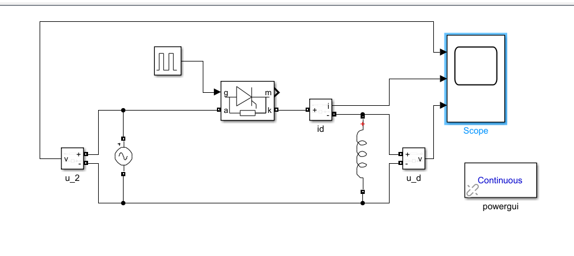
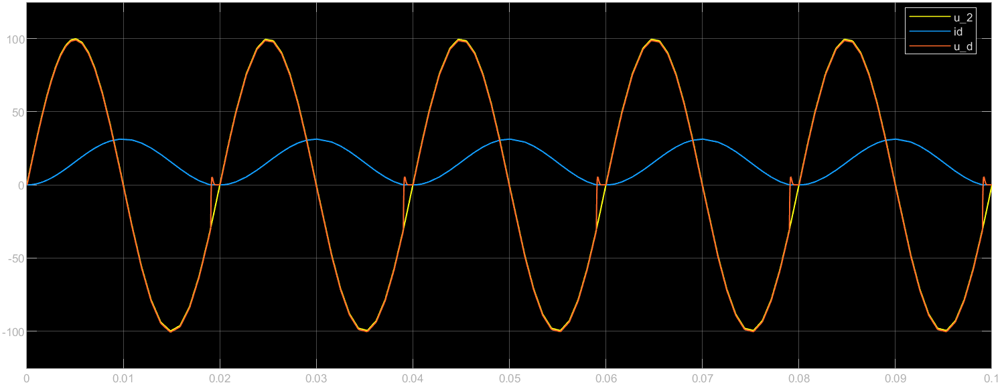
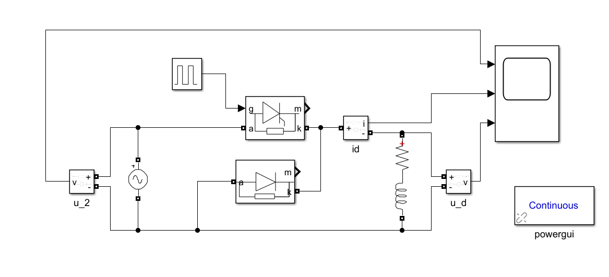

0 前言
电力电子仿真技术对于电力电子的学习很重要，因此我开辟这一个栏目，旨在将王兆安、刘进军所编写的《电力电子技术》一书中，我们电储能系统与并网技术用到的经典电路进行仿真搭建，借此提高编程能力和对电力电子拓扑的理解。截至现在还没有讲到任何电路，所以暂时不更新。
我在编写本博客的过程中，参考的其他教材是《电力电子技术MATLAB仿真实践指导和应用》。
1 单相半波可控整流电路
单相半波整流电路对电感负载供电，L = 20mH, = 100V, 求=0 和 60°的负载电流, 以及的波形。
根据电路图可以搭建出模型如下图：

本图中所有的电力电子器件均来自Simulink/Simscape库中的Specialised Power Electronics Library。power gui可以通过直接点击Specialised Power Electronics找到。
在 Pulse Generator 模块中， 可通过设置相位延迟 （Phase Delay） 的参数 （即零时刻与触发脉冲的间隔时间）， 对应即为 α 的角度。
触发延迟角时的工作图像如下：

触发延迟角时的工作图像如下：（当 α = 60° 时，Phase Delay设置为 0.02/6s）

pulse generator的基于时间要修改为基于仿真时间
加上电阻后，可以再加一个续流二极管，得到的图像如下：


-
：触发延迟角
-
：导通角
-
的移相范围：0~180
-
直流输出的平均电压：$$U_d = \frac{\sqrt{2}U_2}{2\pi}(1+cos\alpha)$$
-
这种通过相位来控制直流输出电压大小的方式，称为相位控制方式，简称：相控。
-
有电感存在时，由于电感的电流不能突变，所以延迟了晶闸管的关断时刻，这导致平均输出电压下降
-
引入续流二极管后，实现了续流，它可以让电压不再出现负的部分，仅通过消耗L上的电流，可以实现电感电流连续的工作状态